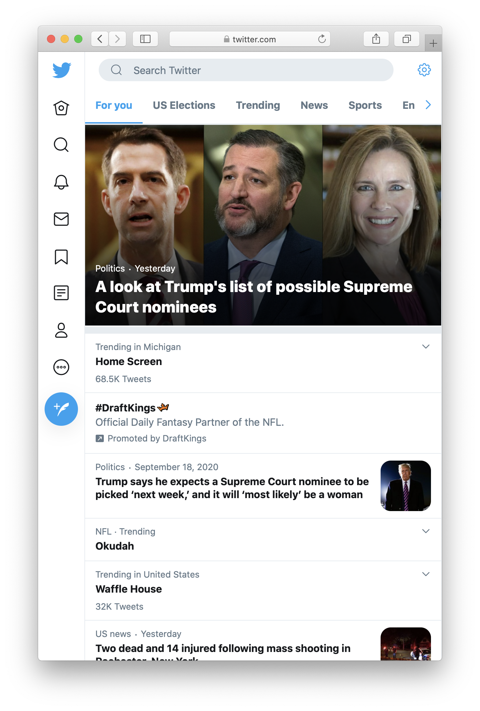

Feeds (like Twitter or Instagram) are unique in that their content is authored by all collective users instead of by a single/a few creators. Like Webpages and Websites content is dynamic and interactive.
| Length | Infinite |
| Experience | Non-linear, Segmented |
| Realm | Physical, Digital |
| Example |

|
Platforms are not publishers
by Jeff Jarvis The Atlantic
Google, Facebook, Twitter, and the internet are not media. They are something new we do not yet fully understand.
We are often doomed to see the future as the analog of the past. Journalists see screens that contain familiar text and images, and that serve what used to be their ads—and they call that media. Such a mediacentric and egocentric worldview brings too many presumptions and misses too many opportunities.
To call these platforms publishers—as The Atlantic’s Adrienne LaFrance recently did—is to presume that their task is merely to produce content. It is to presume, then, that the internet should be produced, packaged, and polished, and that when someone says something bad anywhere on it then the entire internet is beschmutzed. In Europe, it also means that the internet should be regulated, and in a growing list of authoritarian nations—China, Russia, Iran, Turkey—it means that the internet and the public’s speech on it should be controlled.
The larger question, of course, is what the internet is and how it fits into society and society into it. We are just beginning to see what it can be. The essential value of the internet is conversation, not content. The internet connects more than 3 billion people and enables a grand diversity among them to speak, if not yet to be heard. “Republics,” said the late Columbia University professor James Carey, “require conversation, often cacophonous conversation, for they should be noisy places.” That sound you hear, which sometimes grates, is the racket of society negotiating its norms and standards, its future. It is the messy sound of democracy.
The banning of Infowars from most major platforms is a sign of that process beginning to work. Civilization is winning, at last. Alex Jones went too far and the public, empowered by the same tools of social media he exploited, told the platforms that his behavior is unacceptable in a civilized society. The platforms—like media and like regulators—might prefer to start with a set of rules that can be enforced by government, by social-media managers, or by algorithms. But that’s not how we negotiate our standards. The breach makes the rule. We know pornography, propaganda, trolling, and spamming when we see it, and then write the rules to prevent it. That progress always seems to take too long, but it is prudent that we ban what we see rather than everything we might fear.
I fear we are rushing headlong into a moral panic, choosing to believe a dark image of the world and then to blame all its ills on technology, in the case of media (or on immigrants and the unwhite, in the case of the Trumpists). Here is Ashley Crossman’s definition: “A moral panic is a widespread fear, most often an irrational one, that someone or something is a threat to the values, safety, and interests of a community or society at large. Typically, a moral panic is perpetuated by news media, fueled by politicians, and often results in the passage of new laws or policies that target the source of the panic. In this way, moral panic can foster increased social control.” Sound familiar?
Instead, we should view the evolution of the internet in context. First, it is vital to judge the totality of the value of the platforms and the net. Without them, we would not have #BlackLivesMatter, #MeToo, and the voices of the Parkland students, and Americans would not now finally see how often white people call the police on others who are living their lives while black. Look at your Facebook feed. I challenge you to find the infestation of Nazis in it (unless you already consort with them). You’ll find cats and cheese. You’ll find friends sharing babies or illnesses, reaching out for connection. You’ll find people who have not been spoiled or addicted by technology, who still have agency, ethics, and intelligence.
Second, we need to understand the problem we are trying to address: not technology, but human behavior using technology, the bad acts of some small—yes, small—number of propagandists, trolls, misogynists, bigots, thieves, and jerks. They are manipulating the platforms, which if anything were too optimistic about human behavior as a whole. Today these platforms are our best defense against not only spam, but also Russian election interference now that we know its extent. Sadly, they are a better defense than our own government, led by a man who denies reality. They are our allies.
Third, those of us in media must acknowledge our responsibility for the messes we’ve made. Long before the net, media played a key role in polarizing the nation into red versus blue, black versus white, 99 percent versus 1 percent. CNN earned its money in conflict rather than resolution. Fox News has done more damage to American democracy than the internet. It was the media’s primary business model, built on volume and attention, that led to the clickbait that is the ruin of the net. Media and platforms as well as advertisers need to work together to build new business models based on value, on relationships, on accomplishment, on quality, on openness.
Fourth, it is hubris to think that we understand the full impact of the internet already. Even now, half a millennium after the start of the Gutenberg Age, academics are still debating the impact of printing on society. We are only 24 years past the introduction of the commercial, consumer web in 1994. In Gutenberg years, that puts us at about 1474—still three decades before Luther’s theses, 130 years before the arrival of the first newspaper, a few centuries before the invention of mass media and thus the mass.
Implicit in the criticism of the net and its foibles is dismissal of the mass: the great unwashed, unchecked, unedited crowd, multitude, herd, horde, rabble—the citizens who are disturbing the peace of the privileged. “The ‘mass’ is, of course, a fiction,” the University of Oxford professor John Carey wrote in 1992. “Its function, as a linguistic device, is to eliminate the human status of the majority of people.” The mass is a way of conceiving of people we choose not to know. It is necessarily elitist: dismissive, paternalistic, insulting. The word betrays a worldview tinged with disdain or fear. “We cannot see the mass,” Carey wrote. “Crowds can be seen; but the mass is the crowd in its metaphysical aspect—the sum of all possible crowds.” The internet kills the mass because it empowers people to stand as individuals and members of communities of their choosing. Or, as Marshall McLuhan put it: “Print technology created the public. Electric technology created the mass.” What will the networked technology of the internet create? That is the work we are about.
Next week at the City University of New York’s Craig Newmark Graduate School of Journalism, I will tell our students that it is up to them to reinvent journalism and media because they can. (I also started the News Integrity Initiative there, of which Facebook is a founding funder.) Today, books and newspapers on the net are still recognizable as their antecedents. With the new tools social media provide, journalism can shift to listening to communities, reflecting their needs, serving their goals, and building bridges to make strangers less strange. We call that social journalism.
Journalists cannot work in isolation—they must take journalism to the public, meeting people where they are, informing the conversation where it occurs, on Twitter, Facebook, and YouTube. They also need to work with the platforms. Twitter CEO Jack Dorsey controversially and perhaps clumsily tweeted that Alex Jones and his ilk “can often sensationalize issues and spread unsubstantiated rumors, so it’s critical journalists document, validate, and refute such information directly so people can form their own opinions. This is what serves the public conversation best.” Prickly journalists took offense and I see why. But to give Dorsey the benefit of the doubt, I think he was saying that social media and journalism share space in a larger ecosystem, each with distinct jobs to do. Twitter is not The New York Times. It is Times Square.